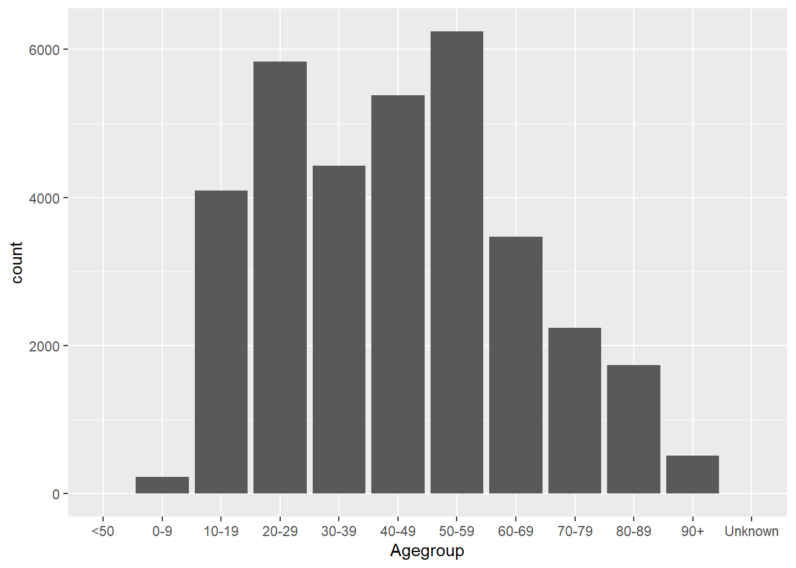
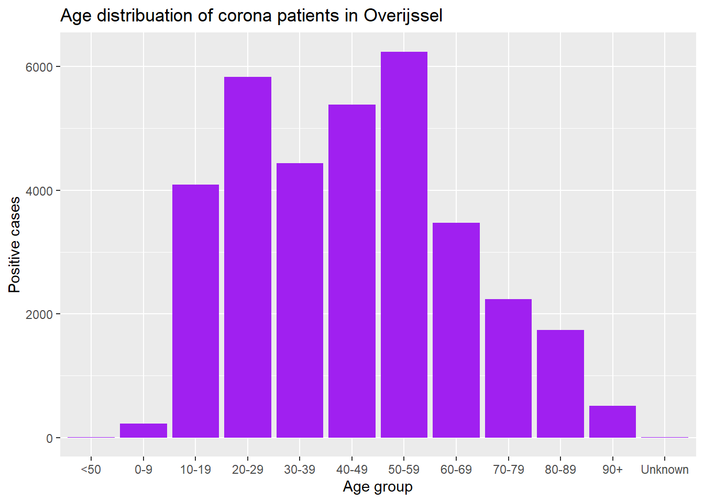
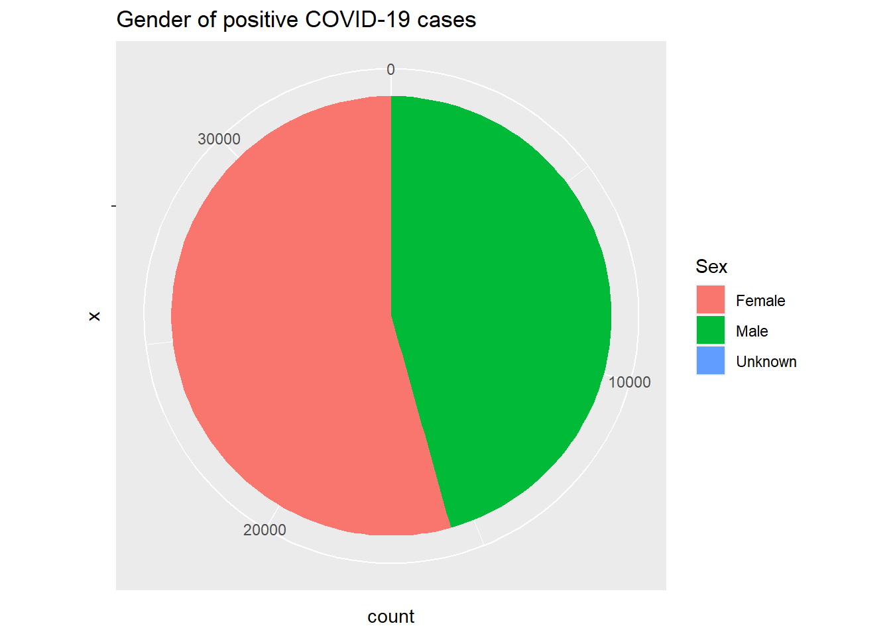
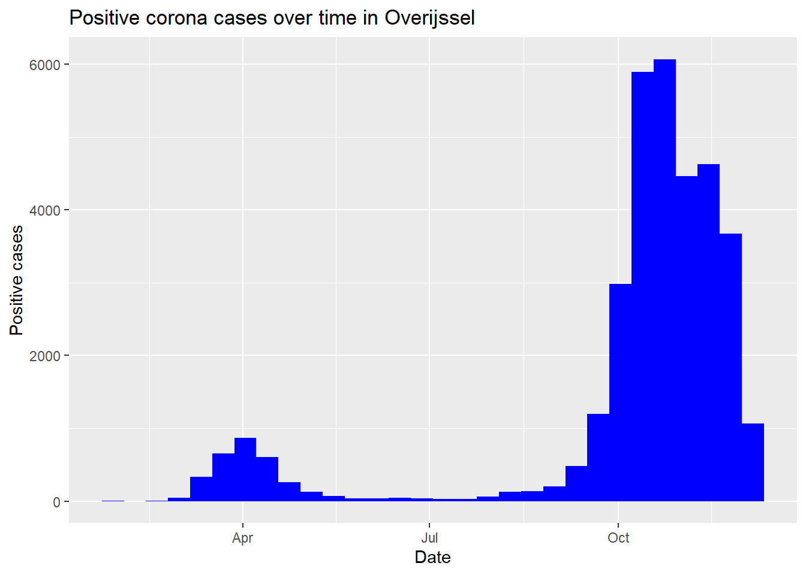
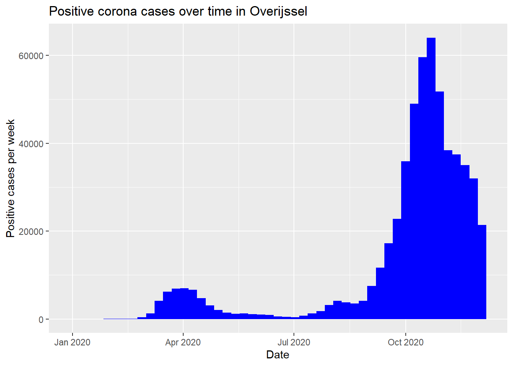

In this assignment you will analyze the COVID-19 cases in the Netherlands using different types of tables and graphs.
Please download the dataset COVID-19_casus_landelijk.csv.
Import this dataset into R and save it in a variable named COVID_cases.
After this, view the dataset to make sure the import went correctly.
The first few lines of the raw file look like this:
Date_file;Date_statistics;Date_statistics_type;Agegroup;Sex;Province;Hospital_admission;Deceased;Week_of_death;Municipal_health_service
2020-11-17 10:00:00;2020-01-01;DOO;40-49;Female;Noord-Holland;No;No;;GGD Amsterdam
2020-11-17 10:00:00;2020-01-12;DOO;60-69;Female;Noord-Brabant;No;No;;GGD Hart voor Brabant
2020-11-17 10:00:00;2020-01-20;DOO;50-59;Female;Gelderland;No;No;;GGD Gelderland-Zuid
2020-11-17 10:00:00;2020-01-29;DOO;80-89;Male;Overijssel;No;No;;GGD Regio Twente
2020-11-17 10:00:00;2020-01-31;DOO;80-89;Male;Noord-Brabant;Yes;Yes;202015;GGD Brabant Zuid-Oost To check if your import went correctly, you can view the dataset using the View() command. You can check how to use that command using:
?ViewYou can see that this dataset is a CSV-file.
Try to find out how you can import a csv file in R, by googling import CSV-file in R.
If you get the error message below, make sure you set the working directory to the directory in which the file is
Error in file(file, "rt") : cannot open the connection
In addition: Warning message:
In file(file, "rt") :
cannot open file 'COVID-19_casus_landelijk.csv': No such file or directoryIf you do not know how to set your working directory, try googling set working directory in R
You can use the function read.csv() to import a CSV-file. Use ?read.csv to look at the documentation of this function, and look at some examples of how it is used, and look through the arguments to see if you might need one of them.
?read.csvFirst, set the working directory to the place where your file is using the setwd() command. You can do this by putting the path of this directory in the code. Make sure to change all backslashes (\) to forward slashes (/) in that case. You can also select the working directory manually, by using the choose.dir() function.
setwd("C:/users/yourname/downloads") #Putting the path in the code
setwd(choose.dir()) #Selecting the working directory by handAfter this, you can import the dataset. Because it is a CSV-file, you use the function read.csv. You can see in the file that different collumns are seperated by a semi-colon (;). Therefore, you need to set the sep-parameter to ";".
COVID_cases <- read.csv("COVID-19_casus_landelijk.csv", sep=";")To view the dataset, you can then use the View() command
View(COVID_cases)In this assignment, you will need certain functions that are part of the tidyverse package. Please try to import that package.
Make sure that you install the package first before importing it.
When installing it, you might see a warning like this
WARNING: Rtools is required to build R packages but is not currently installed. Please download and install the appropriate version of Rtools before proceeding:
https://cran.rstudio.com/bin/windows/Rtools/This does not mean that the installation failed. It is not necessary to install Rtools. If the istallation gives the message below, your installation went successfully
package ‘tidyverse’ successfully unpacked and MD5 sums checkedIf you do not know how to install a package, try googling install packages in R
When importing a package, you might get this message:
-- Attaching packages --------------------------------------- tidyverse 1.3.0 --
v ggplot2 3.3.2 v purrr 0.3.4
v tibble 3.0.3 v dplyr 1.0.2
v tidyr 1.1.2 v stringr 1.4.0
v readr 1.4.0 v forcats 0.5.0
-- Conflicts ------------------------------------------ tidyverse_conflicts() --
x dplyr::filter() masks stats::filter()
x dplyr::lag() masks stats::lag()This does not mean the import failed. It just means that R imports several other packagestoo. These are packages that tidyverse needs to operate (dependencies). Sometimes, the same function name is used in multiple packages. That means that R will overwrite one function with another. These are conflicts. This is usually not a problem however, so you don’t need to do anything with that.
If you do not know how to import a package, try googling import packages in R
If you have not used this library before, first install the package on your computer
install.packages("tidyverse")## Installing package into 'C:/Users/woute/Documents/R/win-library/4.0'
## (as 'lib' is unspecified)## package 'tidyverse' successfully unpacked and MD5 sums checked
##
## The downloaded binary packages are in
## C:\Users\woute\AppData\Local\Temp\RtmpM7DXQl\downloaded_packagesAfter this, you need to import the library
library(tidyverse)## -- Attaching packages --------------------------------------- tidyverse 1.3.0 --## v ggplot2 3.3.2 v purrr 0.3.4
## v tibble 3.0.4 v dplyr 1.0.2
## v tidyr 1.1.2 v stringr 1.4.0
## v readr 1.4.0 v forcats 0.5.0## -- Conflicts ------------------------------------------ tidyverse_conflicts() --
## x dplyr::filter() masks stats::filter()
## x dplyr::lag() masks stats::lag()Explore the imported dataset. You can do this in various different ways.
Look at these description of the dataset and look at the different variables.
Try to find out:
This file contains the following characteristics per positively tested case in the Netherlands: Date for statistics, Age group, Gender, Hospitalization, Death, Week of death, Province, Reporting GGD
The file is structured as follows: A record for every laboratory confirmed COVID-19 patient in the Netherlands, since the first COVID-19 report in the Netherlands on 27/02/2020 (Date for statistics may be earlier). The file is refreshed daily at 16:00, based on the data registered at 10:00 that day in the national system for notifiable infectious diseases (Osiris AIZ).
Description of the variables
Date_file: Date and time on which the data was published by RIVM
Date_statistics: Date for statistic; first day of illness, if not known, date lab positive, if not known, report date to GGD (format: yyyy-mm-dd)
Date_statistics_type: Type of date that was available for date for the variable “Date for statistics”, where:
DOO = Date of disease onset: First day of illness as reported by GGD. Note: it is not always known whether this first day of illness actually involved Covid-19.
DPL = Date of first Positive Labresult: Date of the (first) positive lab result.
DON = Date of Notification: Date on which the notification was received by the GGD.
Agegroup: Age group during life; 0-9, 10-19, …, 90+; upon death <50, 50-59, 60-69, 70-79, 80-89, 90+, Unknown
Sex: Gender; Unknown, Male, Female
Province: Name of the province (based on the patient’s whereabouts)
Hospital_admission: Hospitalization. Unknown, Yes, No. As of May 1, 2020, it will be inquired whether the indication of hospitalization was Covid-19 related. If not, the value of this column is “No”.
Deceased: Death. Unknown = Unknown, Yes = Yes, No = No.
Week of Death: Week of death. YYYYWW according to ISO week notation (start on Monday to Sunday)
Municipal_health_service: GGD that made the report.
Try googling for explore dataset in R
To explore a dataset, you can use one, for example, the head(), dim(), summary(), glimpse(), names() and class() functions. Use ?function_name to find out how these functions work, and test them out to see which ones you like most.
There are multiple ways to explore the dataset. The easiest way (in my opinion) is the glimse() function.
glimpse(COVID_cases)## Rows: 557,224
## Columns: 10
## $ Date_file <chr> "2020-12-06 10:00:00", "2020-12-06 10:00:0...
## $ Date_statistics <chr> "2020-01-01", "2020-01-18", "2020-01-20", ...
## $ Date_statistics_type <chr> "DOO", "DOO", "DOO", "DOO", "DOO", "DOO", ...
## $ Agegroup <chr> "40-49", "60-69", "50-59", "80-89", "80-89...
## $ Sex <chr> "Female", "Female", "Female", "Male", "Mal...
## $ Province <chr> "Noord-Holland", "Noord-Holland", "Gelderl...
## $ Hospital_admission <chr> "No", "No", "No", "No", "Yes", "No", "Yes"...
## $ Deceased <chr> "No", "No", "No", "No", "Yes", "No", "No",...
## $ Week_of_death <int> NA, NA, NA, NA, 202015, NA, NA, NA, NA, NA...
## $ Municipal_health_service <chr> "GGD Amsterdam", "GGD Kennemerland", "GGD ...As you see, it gives you the amount of rows (variables) and columns (observations). For each of the variables, it gives you the name, data-type (<chr>,<int>), and some of the values. There are also other functions you can use:
head(COVID_cases)
# Shows you the first 6 observations from the dataset
dim(COVID_cases)
# Gives you the amount of observations and variables
summary(COVID_cases)
# Gives you the amount of observations and data-type for each variable. For numeric variables, it will also give you the mean, min, max, median, and quartiles.
names(COVID_cases)
# Gives you the names of all the variables in the dataframe
class(COVID_cases$Date_file)
# Gives you the data-type of the `Data_file` variable in the dataframeNow that we know how the dataset looks, we need to clean the dataset. In this process, we will only keep the relevant information, make sure that values are coded correctly, a==nd that everything has the right data-type.
For our analysis, we don’t need the date and time on which the data was published by RIVM, only the date of the statistic itself. Remove this variable from the dataset, and save this clean dataset to a variable called COVID_cases_clean.
You can use the glimpse() command, to check if you did it correctly.
glimpse(COVID_cases_clean)If you do not know how to select certain columns of a dataframe, try googling R select column in dataframe
To select certain columns, you can use the select() function. Use ?select to find out how this function works. You can select all the variable that you want to keep, but also specifically select variables that you want to leave out.
COVID_cases_clean <- COVID_cases %>%
select(!Date_file)The ! means that you select all values except Data_file. It is also possible to just fill in all variables you want to keep. In that case, do not use the !.
Make sure that the new dataset without this column is saved again in the variable.
It is also possible to use the subset() function, but you do not need to know how that one works, but if you used it that is also correct.
If you use glimpse() to check your dataset, your result should look like this:
glimpse(COVID_cases_clean)## Rows: 557,224
## Columns: 9
## $ Date_statistics <chr> "2020-01-01", "2020-01-18", "2020-01-20", ...
## $ Date_statistics_type <chr> "DOO", "DOO", "DOO", "DOO", "DOO", "DOO", ...
## $ Agegroup <chr> "40-49", "60-69", "50-59", "80-89", "80-89...
## $ Sex <chr> "Female", "Female", "Female", "Male", "Mal...
## $ Province <chr> "Noord-Holland", "Noord-Holland", "Gelderl...
## $ Hospital_admission <chr> "No", "No", "No", "No", "Yes", "No", "Yes"...
## $ Deceased <chr> "No", "No", "No", "No", "Yes", "No", "No",...
## $ Week_of_death <int> NA, NA, NA, NA, 202015, NA, NA, NA, NA, NA...
## $ Municipal_health_service <chr> "GGD Amsterdam", "GGD Kennemerland", "GGD ...As you see, the values for Hospital_admission and Deceased are "Yes", "No" and "Unknown". These values are easy for us to understand, but not for R, since it doesn’t understand language. Therefore, R will just treat this as text, and will not know that, for example, values with the value "Unknown" are missing. Therefore you need to recode these variables in the clean dataset. Please recode "Yes" to TRUE, "No" to FALSE, and all other values to NA (Not available).
Try to modify your previous command so it can both be done at once. You can use the glimpse() command, to check if you did it correctly.
To recode a variable, you can use the recode() function. Use ?recode to find out how this function works.
To perform multiple functions after each other, you can use the pipe command %>%.
To make changes to one or multiple columns of a dataframe, you can use the mutate() command. Use ?mutate to find out how this function works.
Make sure you type TRUE, FALSE and NA in capital letters without quotation marks, so R can understand it. You can also just type T for TRUE and F for FALSE.
You can use the .default parameter to give a value to all values you didn’t specify.
COVID_cases_clean <- COVID_cases %>%
select(!Date_file) %>%
mutate(
Deceased = Deceased %>% recode(Yes = TRUE, No = FALSE, .default = NA),
Hospital_admission = Hospital_admission %>% recode(Yes = T, No = F, .default = NA)
)If you want to perform this action in seperate commands, it is also possible to do it like this:
COVID_cases_clean$Deceased = recode(COVID_cases$Deceased, Yes = TRUE, No = FALSE, .default = NA)
COVID_cases_clean$Hospital_admission = recode(COVID_cases$Hospital_admission, Yes = TRUE, No = FALSE, .default = NA)If you use glimpse() to check your dataset, your result should look like this:
glimpse(COVID_cases_clean)## Rows: 557,224
## Columns: 9
## $ Date_statistics <chr> "2020-01-01", "2020-01-18", "2020-01-20", ...
## $ Date_statistics_type <chr> "DOO", "DOO", "DOO", "DOO", "DOO", "DOO", ...
## $ Agegroup <chr> "40-49", "60-69", "50-59", "80-89", "80-89...
## $ Sex <chr> "Female", "Female", "Female", "Male", "Mal...
## $ Province <chr> "Noord-Holland", "Noord-Holland", "Gelderl...
## $ Hospital_admission <lgl> FALSE, FALSE, FALSE, FALSE, TRUE, FALSE, T...
## $ Deceased <lgl> FALSE, FALSE, FALSE, FALSE, TRUE, FALSE, F...
## $ Week_of_death <int> NA, NA, NA, NA, 202015, NA, NA, NA, NA, NA...
## $ Municipal_health_service <chr> "GGD Amsterdam", "GGD Kennemerland", "GGD ...The variable Date_statistics has the datatype <char> but clearly should be a <date>. The variable Week_of_death has the datatype <int>, but should also be a <date>, but is currently expressed in week numbers. Convert these column to a date in the clean dataset.
Try to modify your previous command so it can all be done at once. You can use the glimpse() command, to check if you did it correctly.
If you do not know how to convert a <char> to a <date>, try googling R convert character to date
If you do not know how to convert an <int> to a <date>, try googling R convert int to date
The as.Date() command can be used to convert a <char> to a <date>. Use ?as.Date to find out how this function works.
It is not possible to convert an <int> directly to a <date> using this function. Therefore, you can try to convert it to a <char> first and convert that to a <date>. If you do not know how to convert an <int> to a <char>, try googling R convert int to char
The as.Date() function accepts a format argument. In this argument, you can specify how the dates are written down. For example, the format for a date like "2020-11-19" is "%Y-%m-%d". The formatting of the Week_of_death is more difficult. For that variable, the value 202047 stands for Week 47 of year 2020.
The documentation mentions that the processing of the format is done via strptime(), whose help page describes available conversion specifications. Therefore, use ?strptime to find out how to describe these week numbers in a proper format.
COVID_cases_clean <- COVID_cases %>%
select(!Date_file) %>%
mutate(
Deceased = Deceased %>% recode(Yes = T, No = F, .default = NA),
Hospital_admission = Hospital_admission %>% recode(Yes = T, No = F, .default = NA),
Date_statistics = Date_statistics %>% as.Date(),
Week_of_death = Week_of_death %>% as.character() %>% as.Date("%Y%W")
)If you want to perform this action separately, it is also possible to do
COVID_cases_clean$Date_statistics <- as.Date(COVID_cases$Date_statistics)
COVID_cases_clean$Date_statistics <- as.Date(COVID_cases$Date_statistics)If you use glimpse() to check your dataset, your result should look like this:
glimpse(COVID_cases_clean)## Rows: 557,224
## Columns: 9
## $ Date_statistics <date> 2020-01-01, 2020-01-18, 2020-01-20, 2020-...
## $ Date_statistics_type <chr> "DOO", "DOO", "DOO", "DOO", "DOO", "DOO", ...
## $ Agegroup <chr> "40-49", "60-69", "50-59", "80-89", "80-89...
## $ Sex <chr> "Female", "Female", "Female", "Male", "Mal...
## $ Province <chr> "Noord-Holland", "Noord-Holland", "Gelderl...
## $ Hospital_admission <lgl> FALSE, FALSE, FALSE, FALSE, TRUE, FALSE, T...
## $ Deceased <lgl> FALSE, FALSE, FALSE, FALSE, TRUE, FALSE, F...
## $ Week_of_death <date> NA, NA, NA, NA, 2020-12-06, NA, NA, NA, N...
## $ Municipal_health_service <chr> "GGD Amsterdam", "GGD Kennemerland", "GGD ...Now that all the data is clean it is ready to be analyzed.
Use the ggplot() function to create a barchart to show the age distribution of COVID-cases in the Netherlands.
To make plots with ggplot you always need at least two functions. The first function you need is ggplot(). This is required for every plot you make. This function basically creates the axis for the plot. As an argument for this function you need to put in an aestetics map (aes()). With this map, you tell R which visual elements represent which data. You can link variables, for example, to the x, y, color and fill of your graph.
Now that you created the background with ggplot() you can add layers to it with the actual graphs using the + sign. For example, you can use geom_point() for a scatterplot, geom_line() for a line, geom_smooth() for a smooth line, or geom_bar() for a bar chart. You can also add multiple layers with a + in between. To find out which function you should use for a bar chart, try googling R ggplot bar chart
So imagine you have a dataset called data with 3 variables. The gender, a grade for module 1 and a grade for module 2.
data <- data.frame(
gender = c("Male","Male","Female","Male","Male","Female","Female","Female","Female","Male"),
grade_m1 = c(4.5,9.0,2.0,3.0,6.7,7.7,8.3,2.2,4.4,9.9),
grade_m2 = c(3.3,7.6,2.2,5.5,4.3,6.6,9.4,1.3,5.6,8.3)
)If you want to make a scatterplot with the grade of module 1 on the x-asis, and the grade of module 2 on the y-axis, and different colors for each gender, I would use the following code:
data %>%
ggplot(aes(x = grade_m1, y = grade_m2, color = gender)) +
geom_point()A bar chart is a univariate analysis method. That means that you only have to define which variable to put on the x-axis. On the y-axis, it will automatically put the amount of observations.
Make a histogram using ggplot() + geom_bar() and put the variable Agegroup on the x-axis.
COVID_cases_clean %>%
ggplot(aes(x = Agegroup)) +
geom_bar()Look through the values in the Province column, and pick a province that you like. It’s most fun if everyone in your group picks a different province, so you can look at the differences afterwarnds. Save the name of this province to a variable called prov.
Modify the code from the previous question so it will only show the cases from the province you picked.
You can use the pipe operator %>% to modify the dataset with funcions before using it for the plot. In this case, you want to modify it to only filter out cases where the province is equal to your prov variable.
If you don’t know how to filter certain cases in your dataframe, try googling R filter cases in dataframe
prov <- "Overijssel" #Instead of "Overijssel, you could use a different province of course"
COVID_cases_clean %>%
filter(Province == prov) %>%
ggplot(aes(x = Agegroup)) +
geom_bar()
To make your graph more fancy, try to give the bars of your barchart a nice color and change the axis labels and titel of the graph
If you don’t know how to change the color, try googling change color of ggplot bar chart
If you don’t know how to add labels, try googling ggplot modify labels
You can change for each aestatic how it looks, by adding extra parameters to the geom_bar() function, for example fill or color.
You can use the labs() function to add labels. Use ?labs to find out how it works.
COVID_cases_clean %>%
filter(Province == prov) %>%
ggplot(aes(x = Agegroup)) +
geom_bar(fill="Purple") + # Instead of purple, you could use a different color
labs(title = "Age distribuation of corona patients in Overijssel", x = "Age group", y = "Positive cases")
Try to create a pie chart using the ggplot() function that shows the genders of all positive tested cases.
Feel free to add some labels to make it clearer
There is no specific function to create a pie-chart. However, it is possible to bend any graph into a circle. To do that, you can use the coord_polar() function. Use ?coord_polar to find out how this function works.
Your goal is to create a bar chart with only one bar, which is divided into colors based on the gender of the person.
When trying to make a bar chart with only one bar, you might be tempted to not set a x or a y variable, because you don’t want any variable on the x-axis, and the y-axis should be defined automatically by the aount of cases. However, this will give you this error message:
Error: stat_count() requires an x or y aesthetic.It is required to have at least an x or y variable. To combat this problem, you can set the x variable to ""
The color variable only defines the line around the bar. The fill variable difenes the color of the bar itself
Use the aestatic mapping to link the fill aestatic to the Sex variable
COVID_cases_clean %>%
filter(Province == prov) %>%
ggplot(aes(x = "",fill = Sex)) +
geom_bar() +
coord_polar("y") +
labs(title = "Gender of positive COVID-19 cases")
Use the ggplot() function to create a histogram of the amount of positive cases over time in your chosen province.
Feel free to add some colors and labels to make it look nice!
Copy and modify your code from the previous question, to make it easier. In this code, replace the linked variables in the aestetics map, and the graphing function.
You can use the function geom_bar() to create a barchart. Use ?geom_bar to look up how to use this function.
COVID_cases_clean %>%
filter(Province == prov) %>%
ggplot(aes(x = Date_statistics)) +
geom_histogram(fill = "blue") +
labs(title = "Positive corona cases over time in Overijssel", x = "Date", y = "Positive cases")## `stat_bin()` using `bins = 30`. Pick better value with `binwidth`.
During the previous excercise, you might have gotten the message
`stat_bin()` using `bins = 30`. Pick better value with `binwidth`.Bins are basically the the bars in the histogram. If they have a small with you have a lot of smaller bars, and if you have a high width you have a few higher bars. Try to have every bar represent one week of data.
Try googling the message you got: `stat_bin()` using `bins = 30`. Pick better value with `binwidth`.
Look at the documentation with ?geom_boxplot tos ee what the binwith and bins arguments do.
A week has 7 days. You probably already knew that, but just to be sure.
You can set the with of a bin with the binwidth argument to a value of 7 days, which is a week.
COVID_cases_clean %>%
ggplot(aes(x = Date_statistics)) +
geom_histogram(binwidth = 7, fill = "blue") +
labs(title = "Positive corona cases over time in Overijssel", x = "Date", y = "Positive cases per week")
Think of some more interesting graphs you would like to make, or try to find ways to make your current graphs more pretty! The possibilities are endless! Good luck!